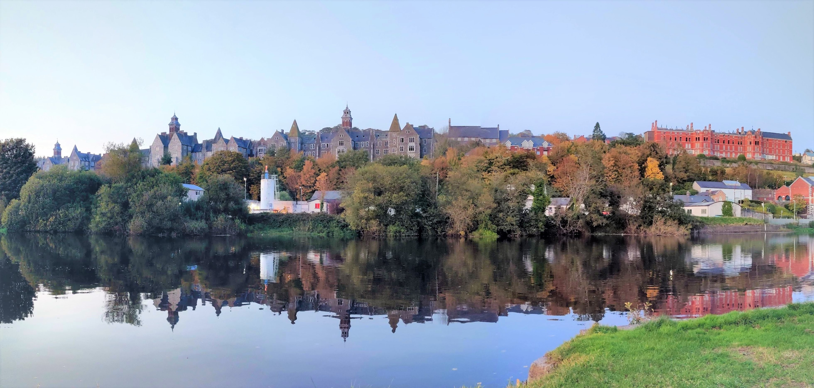
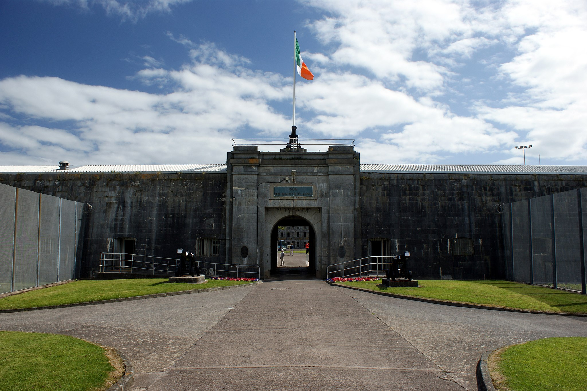
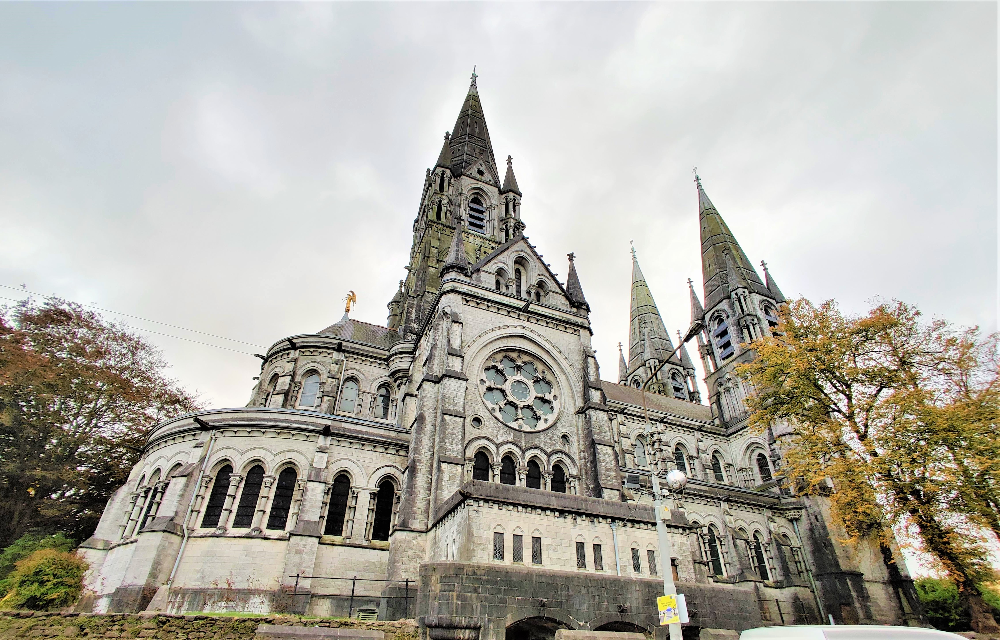
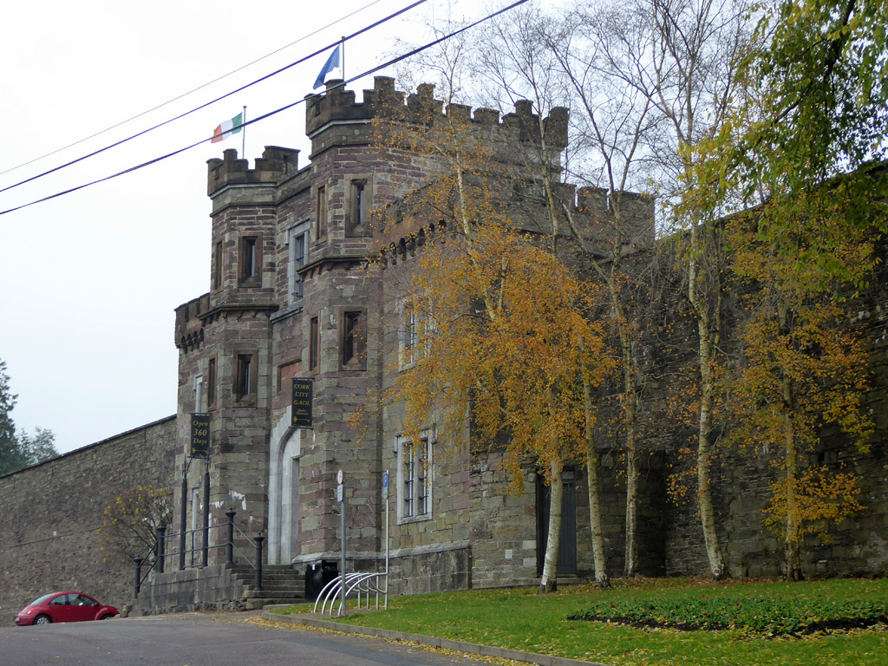
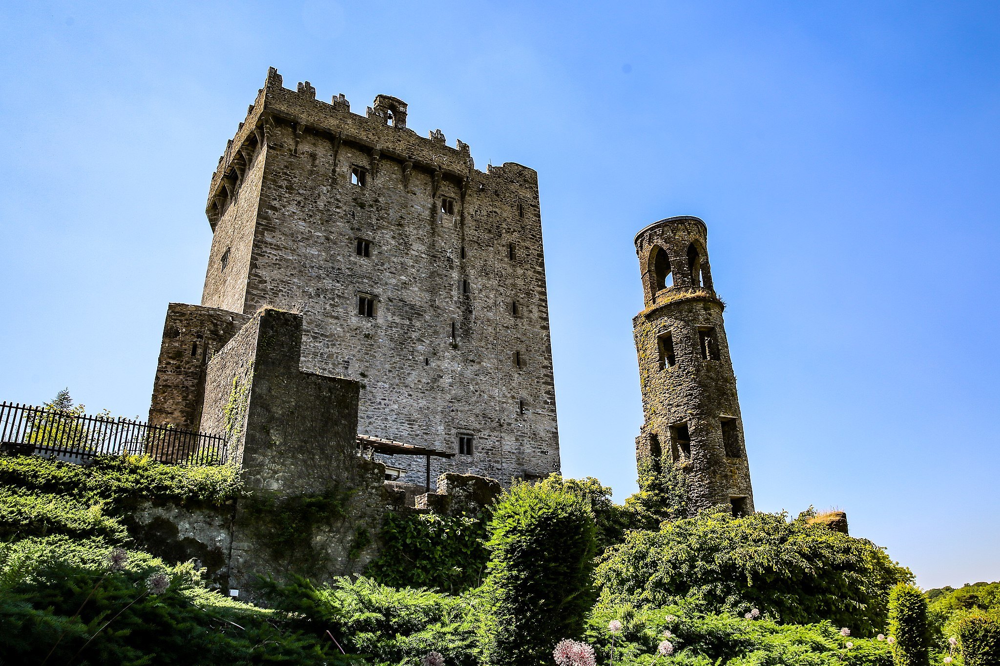

Welcome to Cork
This is a mini survival guide for Desi students in Cork city, Ireland. Here, we will give you guys some useful information about life in Cork city as a Desi, who is new to this vibrant city.
First of all, let me give you some introduction. Cork is the second-largest city in Ireland, located in the south-west of Ireland. Population-wise, It is not a very big city with a little more than 210000 people, but Irish people are one of the friendliest people on earth.
Cork has some of the finest educational institutions, including University College Cork, Cork Institute of Technology, and National Maritime College of Ireland.
Apart from that, Cork also has many industries, mainly Pharmaceuticals such as Pfizer Inc., Johnson & Johnson, and Novartis. And Tech companies such as Apple, Logitech, EMC Corporation, and Amazon.
Things to see
If you are someone who loves to visit historical places, Grand churches, Parks, Countryside with lots of greenery, you will love your time in Cork. Some of the tourist attractions in and around Cork are:
Spike Island (A 19th Century Fort)
Saint Fin Barre's Cathedral
Cork City Gaol (A 19th Century Prison, currently a Museum)
Blarney Castle and Gardens (Ruins of a Medieval Castle)
As it is a mini-guide, I will not waste any more time of yours and take you to the next section that talks about important documents you should have.